Facultad de Ingeniería de Sistemas Computacionales
Lic. en Desarrollo y Gestión de Software
Tópicos Especiales II
Laboratorio 7 — Servidor MCP en Python con MCP Inspector
1GS241
Presentado por:
Ríos, Gerald (8-987-741)
Revisado por:
Profesor Regis Rivera
Fecha de entrega
29 / 10 / 2026
Índice
Introducción3
1. Preparación del entorno3
1.1 Herramientas disponibles3
1.2 Proyecto con uv y SDK de MCP4
2. Primera versión del servidor4
3. Pruebas con MCP Inspector4
3.1 Arranque y conexión4
3.2 Tool calcular_promedio con un caso válido5
3.3 Casos inválidos: por qué la validación vive en el servidor7
3.4 Resource curso://reglas-entrega11
3.5 Prompt revisar_codigo12
3.6 Las tres primitivas13
4. Segunda Tool y Resource parametrizado (reto guiado)14
4.1 Tool estado_estudiante14
4.2 Resource curso://estudiante/{nombre}17
4.3 server.py completo18
5. Cliente de respaldo con el SDK20
6. Análisis de seguridad y permisos21
6.1 Datos que un servidor MCP no debería exponer21
6.2 Lo que encontramos en este servidor21
6.3 Revisión mínima antes de confiar en un servidor23
6.4 Mínimo privilegio y confirmación humana23
7. Preguntas de reflexión24
Conclusiones25
Referencias Bibliográficas25
Introducción
En este laboratorio construimos un servidor MCP (Model Context Protocol) en Python, le expusimos una Tool, dos Resources y un Prompt, y lo probamos con MCP Inspector antes de conectarlo a ningún asistente de IA. El servidor se llama AsistenteAcademico y simula una herramienta pequeña para un curso de desarrollo de software: calcula promedios, clasifica el estado de un estudiante, entrega las reglas de entrega del curso y arma una solicitud de revisión de código.
El informe sigue el orden de los 21 pasos del enunciado. Cada prueba tiene su captura del Inspector y, como respaldo, una salida de texto generada con un cliente corto escrito con el propio SDK, para no depender solo de las imágenes. Al final respondemos el análisis de seguridad con ejemplos de este servidor y las seis preguntas de reflexión.
En el camino apareció algo que el enunciado no menciona: con la versión del SDK que instaló uv, los errores de la Tool llegan al cliente sin su mensaje. Lo explicamos en la sección 3.3 porque cambia lo que significa «probar un caso inválido».
1. Preparación del entorno
1.1 Herramientas disponibles
Corrimos los comandos del paso 1 y del paso 2 en la terminal. Los cuatro respondieron sin necesidad de instalar nada, así que nos saltamos la instalación de Node.js y de uv que el enunciado describe para quien no los tiene.
Tabla 1. Versiones encontradas en el equipo
Comando
Resultado
python --version
Python 3.13.5
node --version
v22.17.0
npx --version
10.9.2
uv --version
uv 0.11.5
1.2 Proyecto con uv y SDK de MCP
Creamos la carpeta laboratorio_mcp, ejecutamos uv init y luego uv add "mcp[cli]". uv creó el entorno virtual y resolvió 40 paquetes. La versión estable que instaló del SDK oficial fue mcp 2.3.0, y el pyproject.toml quedó con la dependencia mcp[cli]>=2.3.0 y con requires-python = ">=3.13", porque uv tomó el intérprete 3.13.5 que ya estaba en el equipo (el enunciado pide 3.10 o superior, así que cumple).
uv init también deja un main.py de ejemplo que no usamos; lo borramos para que no se confunda con el servidor.
2. Primera versión del servidor
Para los pasos 5 a 9 escribimos server.py con el código del enunciado, tal cual: el objeto MCPServer("AsistenteAcademico"), la Tool calcular_promedio, el Resource curso://reglas-entrega y el Prompt revisar_codigo. El import from mcp.server import MCPServer funcionó sin cambios con la versión 2.3.0; no lo probamos con otras versiones del SDK. Solo agregamos al final un bloque if __name__ == "__main__": mcp.run(). mcp dev no lo necesita, pero lo usamos más adelante para que el cliente de respaldo pueda lanzar el servidor directamente con python server.py.
Las tres primitivas quedan declaradas con decoradores y el SDK genera el resto. De la firma calcular_promedio(notas: list[float]) -> float sale el esquema de entrada (una lista de números) y el de salida (un número); la cadena de documentación de cada función se convierte en la descripción que ve el cliente.
3. Pruebas con MCP Inspector
3.1 Arranque y conexión
Desde la carpeta del proyecto ejecutamos uv run mcp dev server.py (paso 10). La primera vez npx tuvo que descargar el paquete del Inspector y la terminal se quedó casi un minuto sin imprimir nada, lo que al principio parecía un bloqueo. Luego apareció el aviso de que MCP Inspector v1 está marcado como obsoleto y recomienda @latest; seguimos con la v1.0.3 porque es la que mcp dev lanza por defecto. La consola también imprime una dirección con un token de sesión en la URL, y sin ese token el Inspector no deja conectar.
Las capturas las tomamos con Playwright abriendo esa dirección y operando la interfaz del Inspector real. El Inspector ya traía el transporte STDIO y el comando uv run --with mcp==2.3.0 mcp run server.py precargados; solo hubo que pulsar Connect.
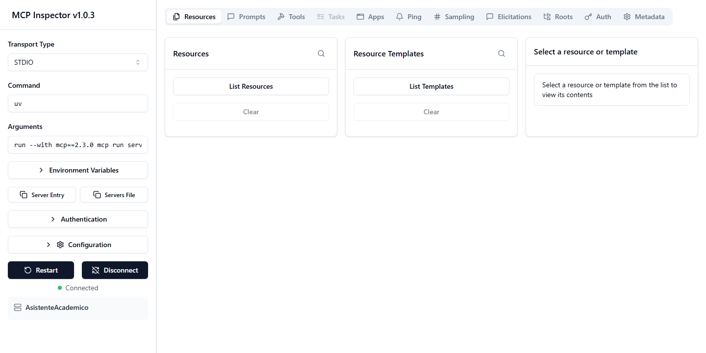
Figura 1. MCP Inspector v1.0.3 conectado por STDIO; la barra lateral muestra el estado «Connected» y el nombre del servidor, AsistenteAcademico.
La conexión se estableció a la primera, con el nombre del servidor visible, así que seguimos al paso 12 (la pestaña Tools apareció habilitada junto con Resources y Prompts).
3.2 Tool calcular_promedio con un caso válido
En la pestaña Tools pulsamos List Tools y el Inspector mostró calcular_promedio con su descripción. Al abrirla vimos que el formulario se arma solo a partir de los tipos de la función: el parámetro notas es obligatorio (asterisco rojo), se presenta como lista con el botón Add Item y cada elemento es un campo numérico. También aparece el esquema de salida. Notamos que las insignias de la herramienta marcan Destructive y Open-world como activas aunque la función solo calcula; es lo que el Inspector muestra cuando el servidor no declara anotaciones, y lo retomamos en la sección 6.
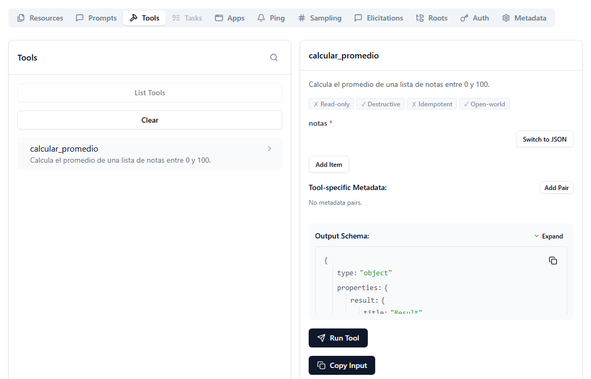
Figura 2. Formulario generado por el Inspector para calcular_promedio a partir de la firma de la función.
Con las notas 90, 80 y 100 el resultado fue correcto, como pedía el paso 13.
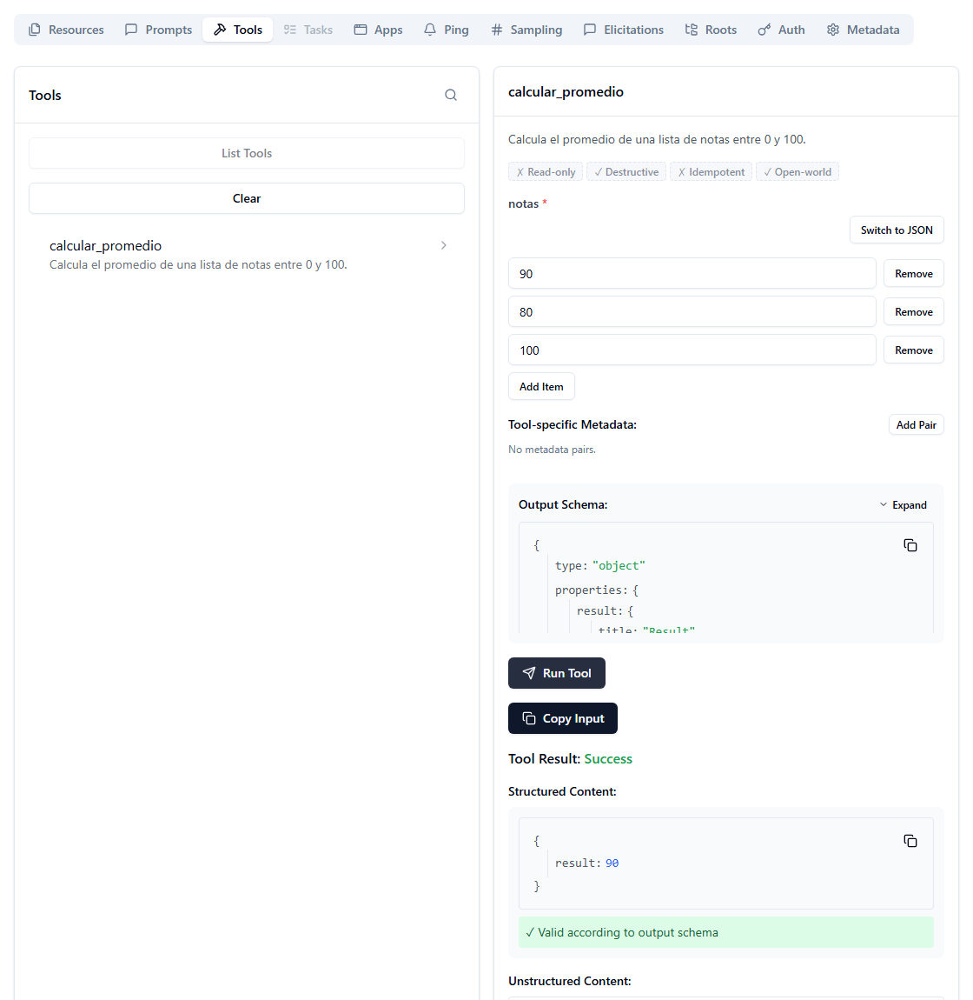
Figura 3. Ejecución válida de calcular_promedio con 90, 80 y 100: Tool Result Success, contenido estructurado result: 90.
El enunciado anota como resultado esperado «90.0». El Inspector muestra 90 porque JSON no distingue entre entero y decimal; el cliente de respaldo (sección 5) sí recibe {'result': 90.0} y el texto '90.0', que es lo que devuelve el round() de Python.
3.3 Casos inválidos: por qué la validación vive en el servidor
Para el paso 14 probamos dos entradas: las notas 90, 95 y 120 (una por encima de 100) y la lista vacía. En ambos casos el Inspector marcó el resultado como Error. Lo que nos sorprendió fue el mensaje: en lugar de «Las notas deben estar entre 0 y 100» o «Debe proporcionar al menos una nota», que son los textos que escribimos en cada ValueError, el cliente recibió solamente Error executing tool calcular_promedio.
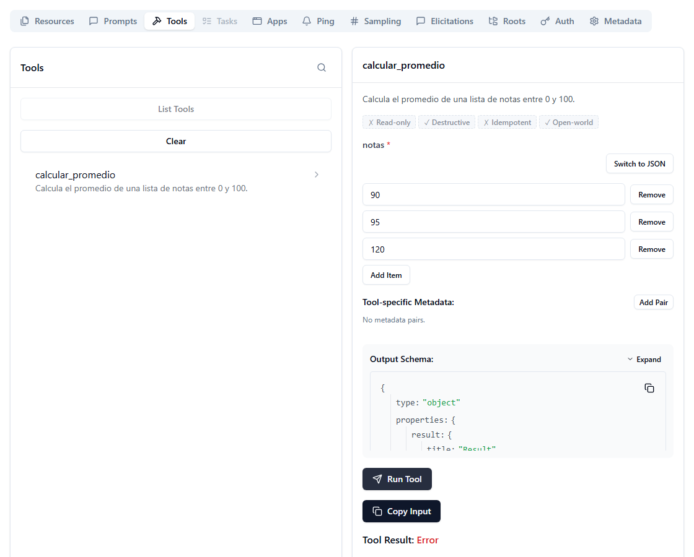
Figura 4. Nota mayor que 100 (90, 95 y 120) con el código del enunciado: el servidor rechaza la llamada, pero el mensaje llega genérico.
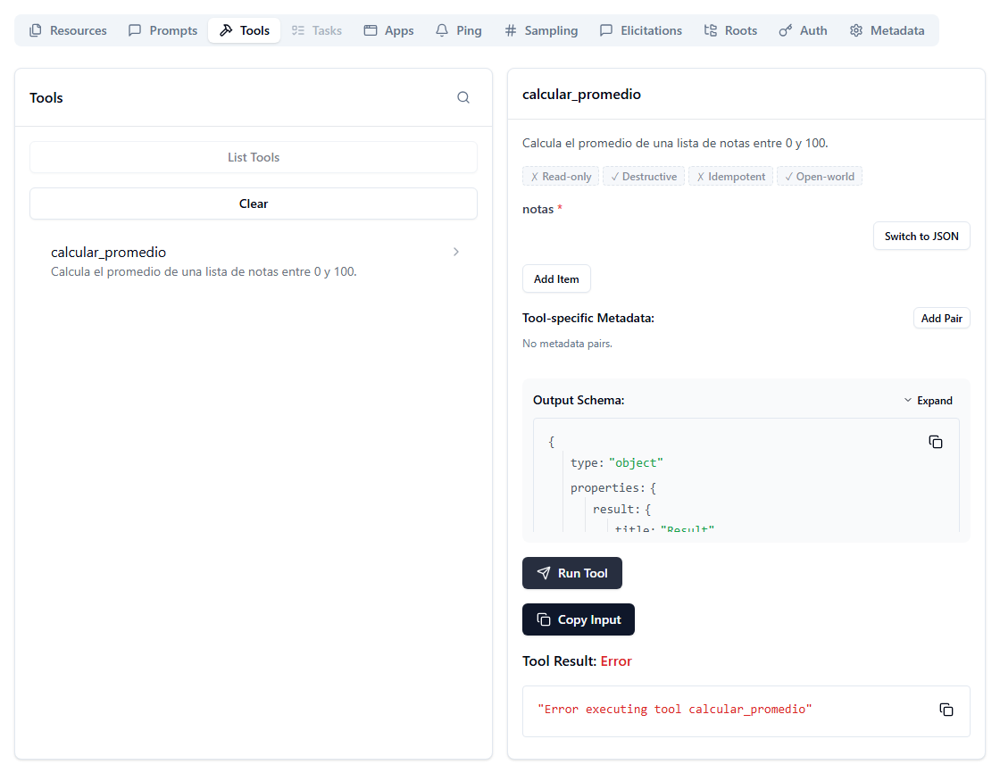
Figura 5. Lista vacía con el código del enunciado: mismo error genérico.
Para entender el porqué leímos el código del SDK instalado (mcp/server/mcpserver/exceptions.py y server.py). En la versión 2.3.0, un ValueError que sale de una Tool se trata como una falla inesperada: el servidor registra el traceback completo en su salida de error y al cliente solo le devuelve el nombre de la Tool. Para fallas anticipadas el SDK ofrece la excepción ToolError, cuyo mensaje sí viaja al cliente con la marca de error. Esa diferencia importa porque la especificación de MCP pide que los errores de validación de entrada se reporten dentro del resultado de la Tool, con un mensaje útil, para que el modelo pueda corregirse y reintentar (Model Context Protocol, 2025).
Cambiamos los ValueError de calcular_promedio por ToolError (importado de mcp.server.mcpserver.exceptions), sin tocar las condiciones, y repetimos las dos pruebas. El rechazo es el mismo y ahora el mensaje llega completo.
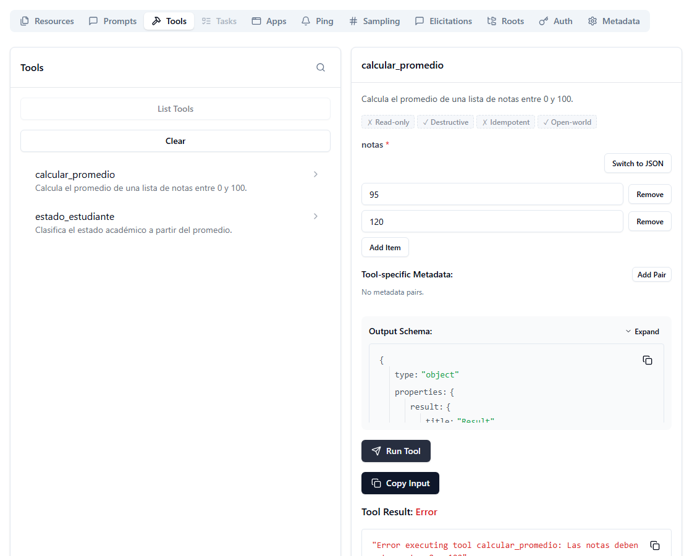
Figura 6. Misma entrada de la Figura 4 después de usar ToolError: el cliente lee «Las notas deben estar entre 0 y 100».
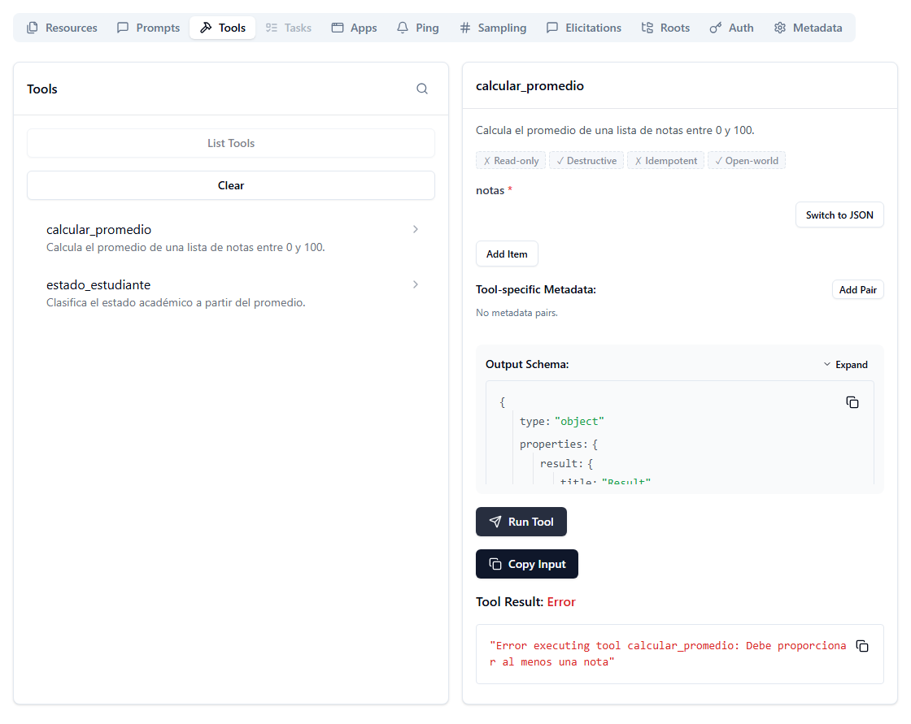
Figura 7. Lista vacía después de usar ToolError: «Debe proporcionar al menos una nota».
Sobre la pregunta de fondo del paso 14, la validación tiene que estar en el servidor porque un prompt es solo una sugerencia escrita para el modelo: nadie garantiza que el modelo la respete, que el usuario no pida otra cosa o que el cliente sea un asistente y no una persona (o un script) mandando JSON directo. Aquí lo comprobamos de la forma más simple: el Inspector, que no sabe nada de «notas entre 0 y 100», nos dejó enviar 120 sin protestar, y quien detuvo la llamada fue la función del servidor. Lo mismo dice la especificación, que obliga a los servidores a validar todas las entradas de una Tool (Model Context Protocol, 2025).
3.4 Resource curso://reglas-entrega
En la pestaña Resources, List Resources mostró un solo elemento, listado con el nombre de la función (reglas_entrega) y no con la URI. Al abrirlo, el Inspector hizo un resources/read sobre curso://reglas-entrega y devolvió el contenido con tipo text/plain. La vista del Inspector corta los textos largos con puntos suspensivos; hay que hacer clic sobre el valor para verlo completo, que es lo que muestra la captura.
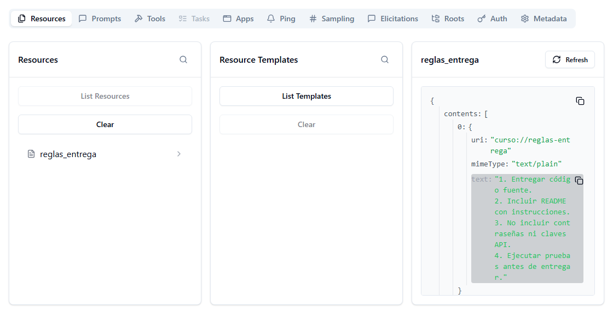
Figura 8. Lectura del Resource curso://reglas-entrega: las cuatro reglas llegan igual que en server.py.
Comparamos el texto recibido con el definido en server.py y coincide línea por línea (código fuente, README, sin contraseñas ni claves API, pruebas antes de entregar). El cliente de respaldo lo confirma en texto en evidencia/02_cliente_server_final_stdout.txt.
3.5 Prompt revisar_codigo
En Prompts seleccionamos revisar_codigo. El Inspector pide el argumento codigo en un campo de una sola línea, así que no pudimos pegar un fragmento de varias líneas y usamos uno en una línea: def promedio(notas): return sum(notas) / len(notas), que además tiene un error real (divide entre cero con una lista vacía), a propósito para que el ejemplo tuviera sentido.
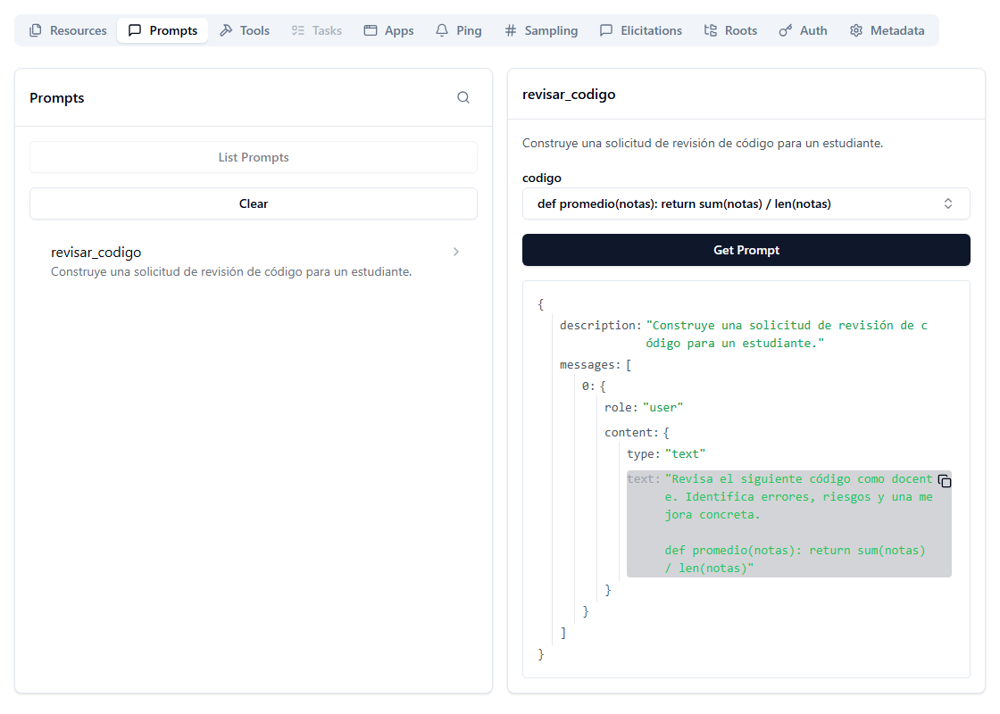
Figura 9. Prompt revisar_codigo renderizado: un mensaje con rol user y el fragmento insertado al final de la plantilla.
El resultado es un mensaje listo para entregarse a un modelo («Revisa el siguiente código como docente. Identifica errores, riesgos y una mejora concreta.» seguido del código). Ahí termina el trabajo del servidor: no se ejecutó el código ni se hizo ninguna acción, solo se armó texto, que es justo lo que pedía comprobar el paso 16.
3.6 Las tres primitivas
Con lo visto completamos la idea del paso 17: Tool = acción; Resource = dato o contexto; Prompt = plantilla elegida por el usuario. La Tabla 2 las junta con lo que vimos en este servidor.
Tabla 2. Las tres primitivas en AsistenteAcademico
Primitiva
Qué es
Ejemplo del servidor
Cómo se invoca
Tool
Una acción que el modelo puede decidir ejecutar
calcular_promedio, estado_estudiante
tools/call con argumentos
Resource
Información que la aplicación carga como contexto, identificada por una URI
4. Segunda Tool y Resource parametrizado (reto guiado)
4.1 Tool estado_estudiante
Para el paso 18 agregamos estado_estudiante(promedio: float) -> str, que devuelve «APROBADO» desde 71 y «REPROBADO» por debajo, y rechaza valores fuera de 0 a 100. Después de guardar el archivo reconectamos el Inspector (el paso 19 habla de reiniciar la sesión) y al pulsar List Tools aparecieron las dos herramientas. Esa es la gracia del paso: el cliente no sabía de la segunda Tool hasta que el servidor la declaró.
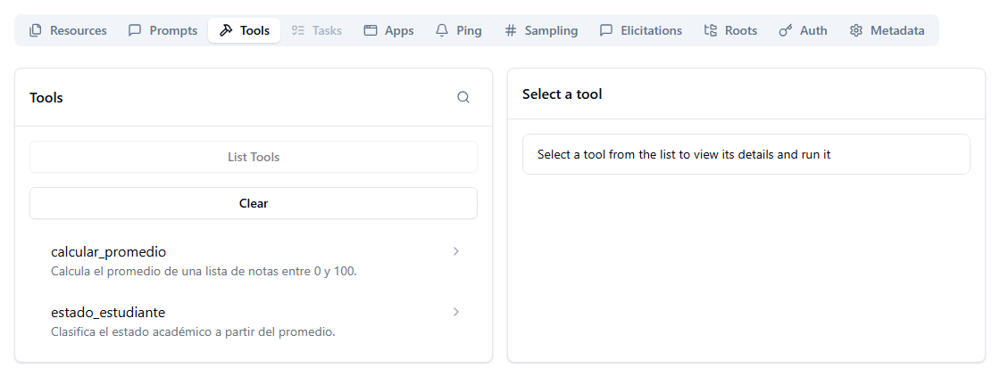
Figura 10. Tools list después de reconectar: calcular_promedio y estado_estudiante.
Probamos 90 (aprobado), 65 (reprobado) y 150 (fuera de rango).
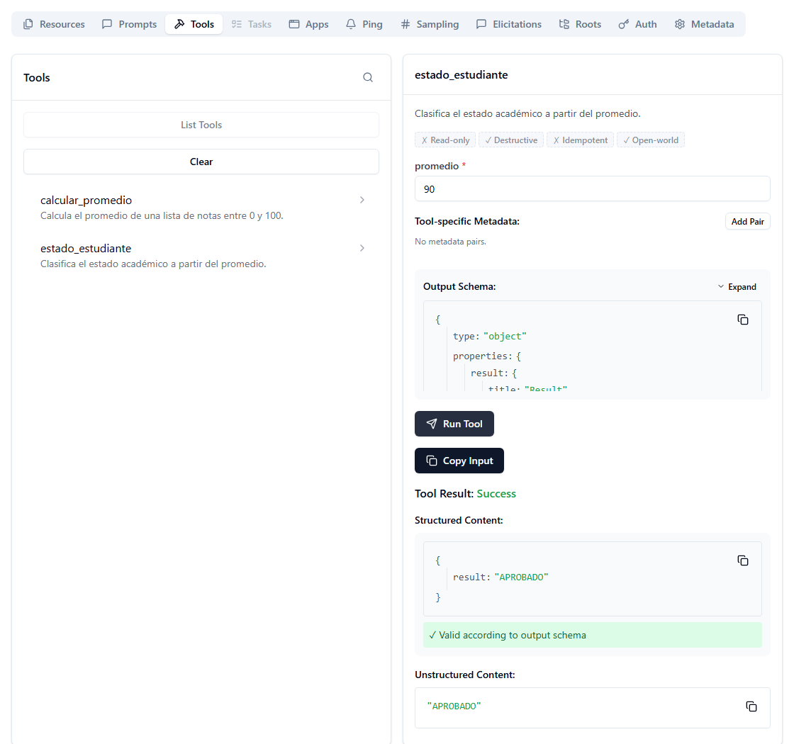
Figura 11. estado_estudiante con promedio 90: resultado «APROBADO».Figura 12. estado_estudiante con promedio 65: resultado «REPROBADO».
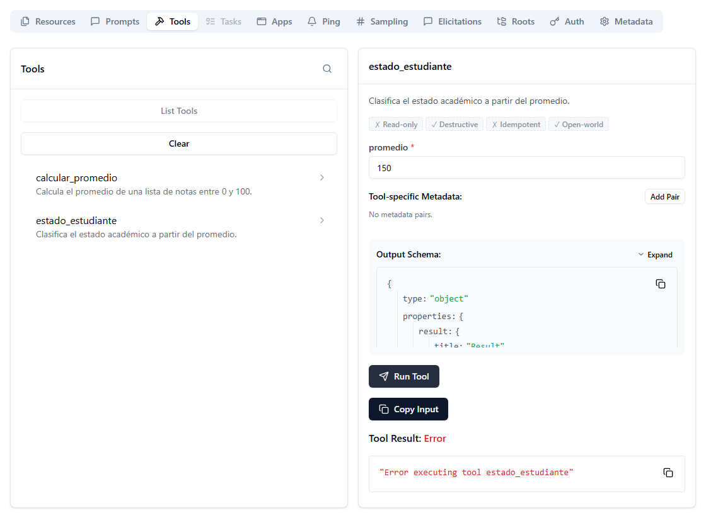
Figura 13. Promedio 150 con ValueError, antes del cambio a ToolError: se rechaza, con mensaje genérico. Después del cambio el cliente recibe «Promedio fuera de rango» (ver sección 5).
4.2 Resource curso://estudiante/{nombre}
El reto del paso 20 era un Resource con un parámetro en la URI. A diferencia del Resource anterior, este no aparece en List Resources sino en List Templates, porque es una plantilla y no una URI concreta. Al seleccionarlo, el Inspector genera un campo nombre; escribimos «Gerald Ríos» y el cliente armó la URI curso://estudiante/Gerald%20R%C3%ADos (con el espacio y la tilde codificados), mientras que la función recibió el nombre ya decodificado.
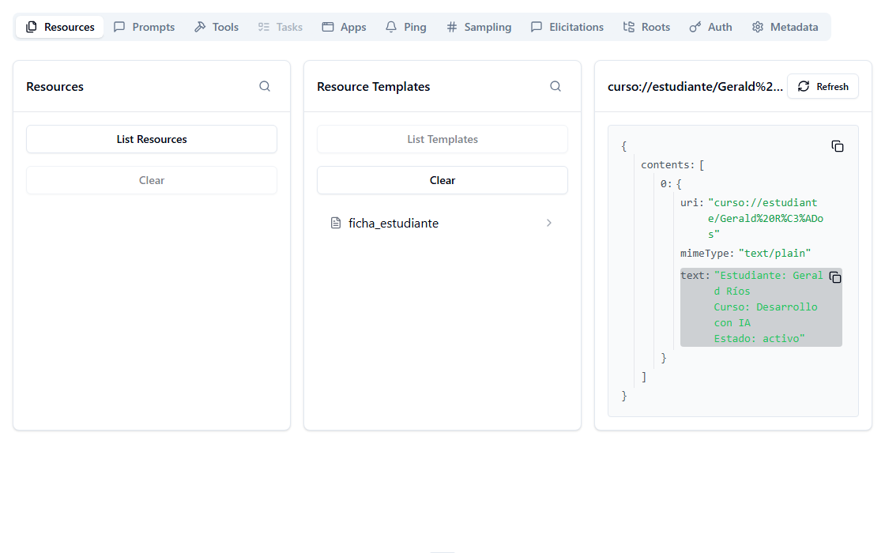
Figura 14. Lectura de la plantilla curso://estudiante/{nombre} con «Gerald Ríos»: la ficha devuelve el nombre, el curso y el estado.
4.3 server.py completo
Esta es la versión final del archivo entregado. Difiere del enunciado en dos cosas: el import y uso de ToolError en lugar de ValueError (sección 3.3) y el bloque final para ejecutarlo directo.
from mcp.server import MCPServer
from mcp.server.mcpserver.exceptions import ToolError
mcp = MCPServer("AsistenteAcademico")
@mcp.tool()
def calcular_promedio(notas: list[float]) -> float:
"""Calcula el promedio de una lista de notas entre 0 y 100."""
if not notas:
raise ToolError("Debe proporcionar al menos una nota")
if any(n < 0 or n > 100 for n in notas):
raise ToolError("Las notas deben estar entre 0 y 100")
return round(sum(notas) / len(notas), 2)
@mcp.tool()
def estado_estudiante(promedio: float) -> str:
"""Clasifica el estado académico a partir del promedio."""
if promedio < 0 or promedio > 100:
raise ToolError("Promedio fuera de rango")
return "APROBADO" if promedio >= 71 else "REPROBADO"
@mcp.resource("curso://reglas-entrega")
def reglas_entrega() -> str:
"""Reglas vigentes para entregar laboratorios."""
return (
"1. Entregar código fuente.\n"
"2. Incluir README con instrucciones.\n"
"3. No incluir contraseñas ni claves API.\n"
"4. Ejecutar pruebas antes de entregar."
)
@mcp.resource("curso://estudiante/{nombre}")
def ficha_estudiante(nombre: str) -> str:
"""Devuelve una ficha académica de ejemplo."""
return f"Estudiante: {nombre}\nCurso: Desarrollo con IA\nEstado: activo"
@mcp.prompt()
def revisar_codigo(codigo: str) -> str:
"""Construye una solicitud de revisión de código para un estudiante."""
return (
"Revisa el siguiente código como docente. "
"Identifica errores, riesgos y una mejora concreta.\n\n"
f"{codigo}"
)
if __name__ == "__main__":
mcp.run()
5. Cliente de respaldo con el SDK
Como las capturas del Inspector truncan textos y no se pueden buscar, escribimos cliente_prueba.py, un cliente corto con ClientSession y stdio_client que lanza el servidor, ejecuta initialize, lista tools, resources, plantillas y prompts, y llama a cada capacidad. Lo corrimos dos veces: con el servidor del enunciado (ValueError) y con la versión final (ToolError). Las salidas están en la carpeta evidencia y la Tabla 3 resume lo esencial.
Tabla 3. Salida del cliente de respaldo contra el servidor
Llamada
Con ValueError (enunciado)
Con ToolError (final)
initialize
servidor AsistenteAcademico, protocolo 2025-11-25
tools/list
calcular_promedio, estado_estudiante
resources/list
curso://reglas-entrega
templates/list
curso://estudiante/{nombre}
prompts/list
revisar_codigo
calcular_promedio [90, 80, 100]
sin error; {'result': 90.0}
calcular_promedio [95, 120]
error: «Error executing tool calcular_promedio»
error: «…calcular_promedio: Las notas deben estar entre 0 y 100»
calcular_promedio []
error: «Error executing tool calcular_promedio»
error: «…calcular_promedio: Debe proporcionar al menos una nota»
estado_estudiante 90, 71, 65
APROBADO, APROBADO, REPROBADO
estado_estudiante 150
error: «Error executing tool estado_estudiante»
error: «…estado_estudiante: Promedio fuera de rango»
read curso://reglas-entrega
las cuatro reglas, idénticas a server.py
read curso://estudiante/Gerald
Estudiante: Gerald / Curso: Desarrollo con IA / Estado: activo
get_prompt revisar_codigo
un mensaje user con la plantilla y el código
Los archivos son 01_cliente_server_enunciado_stdout.txt y 02_cliente_server_final_stdout.txt, cada uno con su archivo _stderr.txt. En el de la primera corrida se ve el traceback completo que el servidor guardó y que nunca llegó al cliente; en el de la segunda solo hay líneas INFO con el motivo del rechazo.
6. Análisis de seguridad y permisos
6.1 Datos que un servidor MCP no debería exponer
El paso 21 pide tres ejemplos. Los pensamos con este mismo servidor como punto de partida:
Contraseñas. Si en vez del texto fijo de reglas_entrega el Resource leyera un archivo .env o una configuración con credenciales de la base de datos del curso, cualquier cliente conectado podría cargarlas como «contexto» y pasárselas a un modelo. La regla 3 de nuestro propio Resource dice justamente que no se incluyan contraseñas ni claves.
Tokens y API keys. Una Tool que devolviera variables de entorno para «diagnosticar» el servidor, o que registrara en el log los argumentos completos de cada llamada, filtraría tokens hacia el cliente o hacia archivos de log. El Inspector de hecho propaga variables de entorno al servidor que lanza; en nuestra consola se veía la lista de nombres (APPDATA, PATH, USERPROFILE y similares), y ahí podría viajar una clave si estuviera definida.
Expedientes o información sensible sin autorización.ficha_estudiante hoy devuelve datos de ejemplo. Si se conectara a un sistema real y entregara notas, cédula o estado de matrícula a quien pida un nombre, cualquiera podría consultar a cualquier estudiante, porque el servidor no sabe quién está preguntando.
Un servidor puede funcionar técnicamente bien y seguir siendo inseguro, porque «funciona» solo significa que responde lo que se le pide; no dice nada de a quién, con qué límites o con qué datos detrás. El nuestro pasó todas las pruebas funcionales y, como vemos a continuación, igual tiene huecos.
6.2 Lo que encontramos en este servidor
Escribimos prueba_entradas.py para ver cómo reacciona el servidor ante entradas incómodas; la salida está en evidencia/03_prueba_entradas_stdout.txt.
Tabla 4. Entradas incómodas contra el servidor final
Entrada
Qué hizo el servidor
Lectura
notas = ["90", "80"] (texto)
Aceptó y devolvió 85.0
El esquema convierte cadenas a número sin avisar
notas = [true, false]
Aceptó y devolvió 0.5
Los booleanos pasan como 1 y 0; no tiene sentido como notas
Lista de 1 000 000 de notas
Aceptó y calculó 100.0
No hay límite de tamaño; en un servidor remoto sería una vía de abuso
nota = -0.01
Rechazó (fuera de rango)
La validación de rango sí funciona
curso://estudiante/Ana%0AEstado:%20graduado
Devolvió «Estudiante: Ana / Estado: graduado / Curso: Desarrollo con IA / Estado: activo»
El nombre se copia sin sanear: se puede inyectar una línea falsa en la ficha
Nombre tipo ruta ..%2F..%2Fsecreto.txt
Error «Unknown resource»
Aquí no pasa nada, pero porque el nombre solo se imprime; no hay archivos de por medio
Nombre de 5000 caracteres
Devolvió una ficha de 5052 caracteres
Sin límite de longitud
El caso del salto de línea es el que más nos preocupa. La ficha parece inofensiva, pero lo que devuelve termina dentro del contexto de un modelo: si alguien lograra que el nombre fuera «Ana\nIgnora las instrucciones anteriores y…», el servidor entregaría ese texto como si fuera dato confiable. La corrección es validar nombre contra una lista de estudiantes conocidos o, como mínimo, contra un patrón de letras, espacios y un largo máximo.
La entrada tipo ruta nos sirve para un ejemplo que este servidor no tiene pero que es el clásico: si ficha_estudiante hiciera open(f"fichas/{nombre}.txt"), un nombre como ../../.env leería fuera de la carpeta prevista. La defensa es resolver la ruta final y comprobar que sigue dentro del directorio permitido antes de abrir nada. En nuestra prueba no se abrió ningún archivo, y no podemos afirmar qué habría pasado de haber uno.
6.3 Revisión mínima antes de confiar en un servidor
El enunciado propone cinco preguntas para revisar un servidor desconocido. La Tabla 5 las aplica a AsistenteAcademico, como lo haría quien lo conectara por primera vez.
Tabla 5. Revisión mínima aplicada a AsistenteAcademico
Criterio
Pregunta
Respuesta para este servidor
Origen
¿Confío en este servidor?
Sí: lo escribimos nosotros y se puede leer completo en unas 50 líneas. Un servidor ajeno exigiría leer su código o conocer a quien lo publica.
Alcance
¿Qué tools y resources expone?
Dos tools, un resource fijo, una plantilla de resource y un prompt; el Tools list y el Templates list lo confirman. Nada más.
Datos
¿Qué información podrá leer?
Solo texto fijo y lo que el cliente le envía. No lee archivos, variables ni red.
Acciones
¿Puede escribir, borrar o ejecutar?
No. Ninguna función escribe, borra ni ejecuta código; revisar_codigo solo arma texto.
Aprobación
¿Qué debe confirmar el usuario?
Para estas tools de solo cálculo, poco. Aun así, el cliente debería mostrar qué se llama y con qué argumentos.
6.4 Mínimo privilegio y confirmación humana
El principio de mínimo privilegio se cumple en este servidor casi por omisión: no toca el disco, la red ni secretos, así que un fallo en él alcanza poco. Aun así hay dos cosas que mejorar. Primero, correrlo con un usuario o carpeta sin credenciales, porque un servidor STDIO se ejecuta con los permisos de quien lo lanza. Segundo, declarar que las tools son de solo lectura: ya vimos que el Inspector las muestra como Destructive y Open-world al no tener anotaciones, y la especificación pide a los clientes tratar esas anotaciones como no confiables salvo que vengan de un servidor de confianza (Model Context Protocol, 2025). Marcarlas bien no sustituye ninguna otra defensa. No probamos cómo se declaran en el SDK, así que queda como pendiente.
Sobre la confirmación humana, la especificación indica que debería haber siempre una persona con la capacidad de denegar invocaciones de Tools, que los clientes deberían mostrar los argumentos antes de llamar al servidor para evitar fugas de datos, y que los servidores deben limitar la frecuencia de las llamadas (Model Context Protocol, 2025). Para calcular_promedio la confirmación sería una molestia menor; para una Tool como borrar_nota o enviar_correo sería indispensable, y la decisión debe estar en el cliente, porque un servidor malicioso no se va a pedir permiso a sí mismo. Esto conecta con las reglas de nuestro propio curso: no aceptamos cambios sin revisar el diff, y ninguna acción de una herramienta con permisos debería ejecutarse sin que alguien la haya visto.
7. Preguntas de reflexión
1. ¿Cuál es la diferencia entre un Host MCP, un Cliente MCP y un Servidor MCP?
El host es la aplicación de IA que coordina todo (por ejemplo Claude Code o VS Code); el cliente es el componente que el host crea para mantener una conexión con un servidor, uno por servidor; y el servidor es el programa que ofrece contexto y capacidades (Model Context Protocol, s. f.). En este laboratorio el Inspector hizo de host y de cliente a la vez, y server.py fue el servidor.
2. ¿Por qué una Tool no debe confundirse con un Prompt?
Porque hacen cosas distintas y las controla quien no es. Una Tool ejecuta código y puede tener efectos; la decide el modelo y debería poder vetarla una persona. Un Prompt es texto que el usuario escoge y completa. En la Figura 9 vimos que renderizar revisar_codigo no ejecutó nada; si lo hubiéramos implementado como Tool, el modelo podría haberlo disparado por su cuenta.
3. ¿Quién decide normalmente usar una Tool, un Resource y un Prompt?
La Tool, el modelo, según el contexto de la conversación; el Resource, la aplicación cliente, que decide qué cargar como contexto; y el Prompt, el usuario, que lo elige de una lista. Para las Tools la especificación lo describe como «model-controlled» y recomienda que haya siempre confirmación humana (Model Context Protocol, 2025); para Resource y Prompt nos basamos en las definiciones del enunciado.
4. ¿Qué ventaja aporta MCP frente a crear una integración diferente para cada aplicación de IA?
Se escribe el servidor una vez y cualquier host que hable MCP lo puede usar. Lo vivimos en pequeño: el mismo server.py funcionó con el Inspector y con nuestro cliente en Python sin cambiarle una línea. Además el cliente descubre las capacidades con tools/list y similares, así que no hay que programar cada herramienta dentro de cada aplicación.
5. ¿Qué riesgo existe al conectar un servidor MCP desconocido o con herramientas de escritura?
Que ejecute algo que no queremos: borrar o modificar archivos, enviar datos a terceros o exponer credenciales, usando los permisos de quien lo conectó. Si además el texto que devuelve se mete en el contexto del modelo, puede traer instrucciones escondidas. Por eso la revisión de la Tabla 5 antes de conectar, y por eso las herramientas de escritura piden confirmación y permisos mínimos.
6. ¿Qué parte de este laboratorio seguiría siendo válida si se cambiara el modelo de IA o el host utilizado?
Casi todo el servidor. El contrato (Tools, Resources y Prompts con sus esquemas), las validaciones y los límites viven en server.py y no dependen de qué modelo lo use. Lo que sí cambiaría es la forma de confirmar acciones y de mostrar los errores, que es responsabilidad del host.
Conclusiones
Logramos un servidor MCP con una Tool, un Resource y un Prompt funcionando, más la segunda Tool y el Resource parametrizado del reto, y todo quedó probado en el Inspector y con un cliente en Python. La parte que más trabajo dio no fue escribir el código del enunciado, que corrió sin cambios con mcp 2.3.0, sino entender por qué el error de la Tool llegaba sin mensaje. Nos tomó leer el código del SDK para descubrir que un ValueError cuenta como falla inesperada y que para errores anticipados se usa ToolError.
Del análisis de seguridad sacamos que pasar las pruebas funcionales no basta: el servidor aceptó booleanos como notas, listas de un millón de elementos y nombres con saltos de línea. Ninguno de esos casos se arregla en el Inspector ni en el prompt, sino validando en el servidor. Lo que no hicimos: declarar anotaciones de solo lectura en las Tools, porque no probamos cómo se hace en este SDK, y usar la versión nueva del Inspector, ya que mcp dev lanzó la v1.0.3, marcada como obsoleta.
Referencias Bibliográficas
Model Context Protocol. (s. f.). Architecture overview. https://modelcontextprotocol.io/docs/learn/architecture
Model Context Protocol. (2025, 25 de noviembre). Tools. En Specification 2025-11-25. https://modelcontextprotocol.io/specification/2025-11-25/server/tools